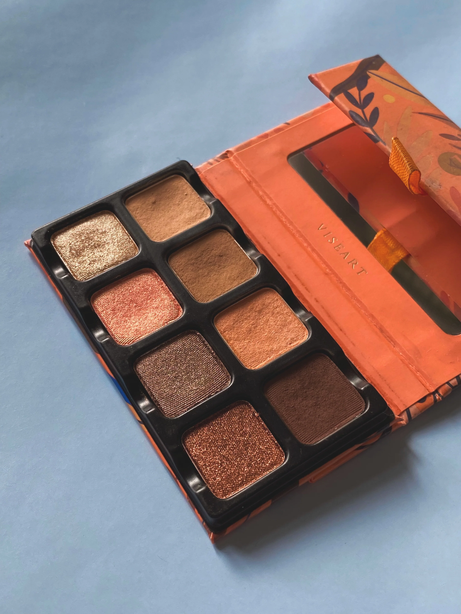

NEUTRALS
Nars er meget kendte for deres Orgasm makeup produkter og har tilføjet en quad ejenskyggepalette til kollektionen. Denne quad indeholder 4 skygger, 1 mat og 3 shimmer. Shimmerne er meget smukke, lette og fine teksturen. Paletten er generelt i den lyse ende, men kan bruges på mange hudtoner på grund af shimmerne.
Viseart er meget kendte for deres øjenskygger som altid er af fantastisk kvalitet og her i den neautrale kategori har vi deres Petit Pro Apricotine. Har man ikke prøvet Viseart før er deres små paletter et godt sted at starte. Denne palette er varmtonet og indeholder 8 skygger der går fra helt lys til mørk med både 4 shimmer og 4 matte.